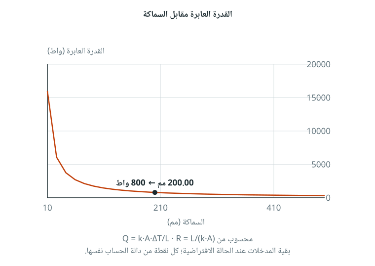

كم واطًا يعبر جدارًا بسماكة معينة؟
غيّر الموصولية والمساحة وفرق الحرارة والسماكة، وتابع المقاومة والقدرة والفيض.
بداية المقياس على الحالة المرجعية: الموصولية 0.80 W/(m·K)، المساحة 10.00 م²، فارق الحرارة 20.00 ك، السماكة 200.00 مم = 800 واط. محاكاة تعليمية لا قياس فيزيائي حقيقي: الأرقام تُحسب من النموذج لحظيًا.
افتراضات النموذج والمصدر
Q = k·A·ΔT/L · R = L/(k·A)
جدار مستوٍ أحادي البعد
حالة مستقرة لا تتغير بالزمن
موصولية ثابتة لا تتغير بالحرارة
لا مصادر حرارة داخلية ولا جسور حرارية
Fundamentals of Heat and Mass Transfer — §2.1 Fourier's law والمقاومة الحرارية — Incropera & DeWitt
Heat and Mass Transfer — التوصيل المستقر أحادي البعد وشبكة المقاومات — Cengel & Ghajar
في الجدار المستوي بلا مصادر حرارة داخلية يستقر التدفق على قيمة واحدة على امتداد السماكة. قانون فورييه يقول إن الفيض يتناسب مع التدرّج الحراري مضروبًا في الموصولية. عمليًّا: مادة أعلى موصولية تنقل أكثر، ومساحة أكبر تنقل أكثر، وسماكة أكبر تنقل أقل. مجموع هذه العلاقات يعطي مقاومة حرارية تساوي السماكة مقسومة على الموصولية والمساحة.
كيف تعمل الظاهرة؟
التوصيل انتقال طاقة حركية بين جزيئات متجاورة بلا انتقال مادة. الجزيئات في الوجه الساخن تهتز أشدّ فتنقل جزءًا من اهتزازها لجاراتها، فينتشر التدرّج عبر السماكة. المعادن تنقل عبر إلكتروناتها الحرة فتوصل أفضل بمرات من العوازل التي تنقل بالاهتزاز الشبكي وحده.
العلاقة بالأرقام
المعادلة: Q = k·A·ΔT/L · R = L/(k·A). عند الموصولية 0.80 W/(m·K)، المساحة 10.00 م²، فارق الحرارة 20.00 ك، السماكة 200.00 مم، يعطي الحساب: القدرة العابرة = 800 واط؛ الفيض الحراري = 80.0 W/m²؛ المقاومة الحرارية = 0.0250 ك/واط. حالة «جدار رقيق» (الموصولية 0.80 W/(m·K)، المساحة 10.00 م²، فارق الحرارة 20.00 ك، السماكة 50.00 مم): القدرة العابرة = 3,200 واط؛ الفيض الحراري = 320.0 W/m²؛ المقاومة الحرارية = 0.0063 ك/واط. حالة «جدار سميك» (الموصولية 0.80 W/(m·K)، المساحة 10.00 م²، فارق الحرارة 20.00 ك، السماكة 500.00 مم): القدرة العابرة = 320 واط؛ الفيض الحراري = 32.0 W/m²؛ المقاومة الحرارية = 0.0625 ك/واط. هذه أمثلة مولدة من دالة الحساب نفسها؛ وليست قياسات فعلية أو مواصفات لجهاز تجاري.
مفاهيم متقاربة
يُخلط بين الموصولية والمقاومة: الأولى خاصية مادة لا تتغير بسماكتها، والثانية خاصية جسم تعتمد على السماكة والمساحة معًا. ويُخلط بين الحالة المستقرة والعابرة: هذه المعادلة تصف حالة استقرّت فيها الحرارة، لا زمن وصولها.
حدود التطبيق
المعادلة تفترض جدارًا مستويًا بلا جسور حرارية ولا مصادر داخلية، وموصولية ثابتة لا تتغير بالحرارة. وفي الجدران الحقيقية ترفع الأعمدة والعتبات الفقد، ويضيف الإشعاع والحمل عند السطحين مقاومتين لا تحسبهما هذه المعادلة.

| الكمية | القيمة | المصدر |
|---|---|---|
| القدرة العابرة — الحالة الافتراضية | 800 واط | [1] |
| الفيض الحراري — الحالة الافتراضية | 80.0 W/m² | [1] |
| المقاومة الحرارية — الحالة الافتراضية | 0.0250 ك/واط | [1] |
المصادر
- 1 Fundamentals of Heat and Mass Transfer — §2.1 Fourier's law والمقاومة الحرارية — Incropera & DeWitt. www.wiley.com/en-us/Fundamentals+of+Heat+and+Mass+Transfer-p-9781118989173 · اطُّلع عليه 2026-11-25
- 2 Heat and Mass Transfer — التوصيل المستقر أحادي البعد وشبكة المقاومات — Cengel & Ghajar. www.mheducation.com/highered/product/heat-and-mass-transfer-cengel-ghajar/M9780073398187.html · اطُّلع عليه 2026-11-25
راجعه: hermes (مراجعة معتمدة 2026-11-26) · 2026-11-26 · آخر تحديث 2026-11-24
رجوع إلى المعمل